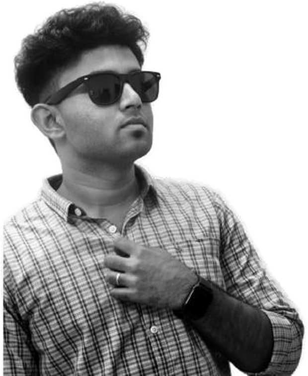

ELMERSON

About
B.Tech graduate in Artificial Intelligence and Data Science, now reading for an M.E. in Computer Science. What I enjoy is the part where a system has to work for real people under real conditions — a class that survives a teacher's network dropping mid-lesson, a payroll ledger that can't be tricked into going negative, a voice agent that answers the phone when nobody is at the front desk.
Most of my work has shipped to production for clients and communities rather than sitting in a repository. I tend to put the rules on the server rather than in the page, and I care about interfaces that stay out of the way.
Experience
Software Developer Intern
Doxa Technology Solutions Aug 2026 – Present- Susee Hyundai AI Calling Agent — an AI voice agent that replaces the dealership front desk and handles inbound customer calls end to end. Gemini Flash 3.1 for conversation and intent, Sarvam AI and Google TTS for natural multilingual speech, deployed on AWS EC2 with Supabase as the data and call-log layer.
- Goimomi Holidays AI Booking Bot — a chat assistant that takes a traveller from enquiry to confirmed booking in one conversation: hotel rooms and cab reservations handled inside the chat, with Zoho Payments integrated so the customer pays without ever leaving it.
- Thangam Stay Inn — a hotel website with an integrated booking engine, Aadhaar-based guest verification and Razorpay payments, backed by an admin CRM for reservations, guest records and occupancy.
Selected work
LYN MEET
An end-to-end classroom meeting platform that replaced third-party conferencing with a self-hosted stack. A mediasoup SFU carries multi-party camera, mic and screen sharing with ICE/TURN, adaptive quality and reconnect handling that keeps a class alive through a teacher's network drop. Alongside it: a collaborative whiteboard with multiple board tabs, PDF import and late-join state sync, and a server-side recording pipeline where a single FFmpeg ingest keeps audio, camera and screen on one clock before composing one MP4 per session. Roles, SSO tickets and attendance are all enforced server-side.
Dan Bonim
Sites, equipment, materials, vendors, workers, attendance and payroll — written in dependency-free HTML, CSS and JavaScript with no frameworks or CDN. Three roles are enforced in Firestore security rules rather than in the page: salaries sit in a collection only admins can read, workers see only their own attendance, and nobody can promote themselves. Runs fully offline in one browser or Firebase-backed for live multi-device sync with queued offline writes.
Mathan Jewellers
A bilingual English/Tamil chit-fund register that replaced a paper ledger with searchable customer and payment records shared live across every device. Instant client-side search with ranked partial matching across name, chit number and phone, a month-by-month collection feed with running totals, and branded paginated PDF statements that share to WhatsApp through the native share sheet.
David Bikes
Digitised a workshop's customer and vehicle records so staff can register bikes against an owner and track each vehicle's service history. Live invoice updates and one-tap PDF bills shareable straight from the app, replacing paper-based billing with a single searchable database.
MLCC Youth
A community app for a youth organisation covering events, announcements and member content, with Firebase auth and real-time updates and OneSignal for targeted push and event reminders. I ran the full release cycle — Play Console listing, store compliance, versioned rollouts and post-launch updates from user feedback.
AI Personalized Learning System
Analyses learner behaviour and delivers personalized recommendations, profiling learners with a Random Forest classifier. Streamlit dashboards for students and teachers with progress tracking and analytics, plus the Gemini API as an interactive tutor. Trained exclusively on privacy-safe synthetic data.
AI-Driven Recipe Generator
A dual-model system: one network classifies food images across 63 classes trained on 8,000 images, a second generates the ingredient list from what it detects. Accuracy on ingredient prediction came largely from investing in a large, well-labelled dataset.
Education
- Microsoft Azure AI Essentials Professional Certificate — Microsoft, Aug 2026
- Career Essentials in GitHub — GitHub, Jul 2026
- Cybersecurity with Artificial Intelligence · Advanced Chatbot Development · Applied Machine Learning
Technical skills
Contact
Open to work. The quickest ways to reach me: